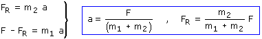
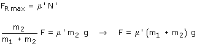

Combinando las ecuaciones obtenidas resulta un sistema de incógnitas: a, N', N, FR  Observa que cuanto mayor sea la fuerza aplicada F mayor será
la fuerza de rozamiento FR Pero la fuerza de rozamiento no
puede pasar de un valor máximo: μ'·N'.  Si la fuerza F supera este valor crítico los bloques se moverán con aceleraciones diferentes |